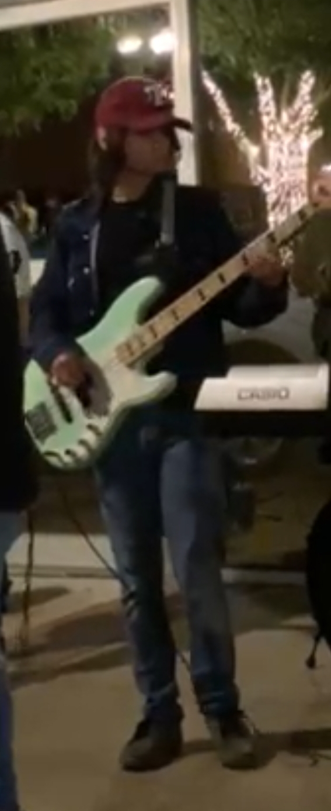
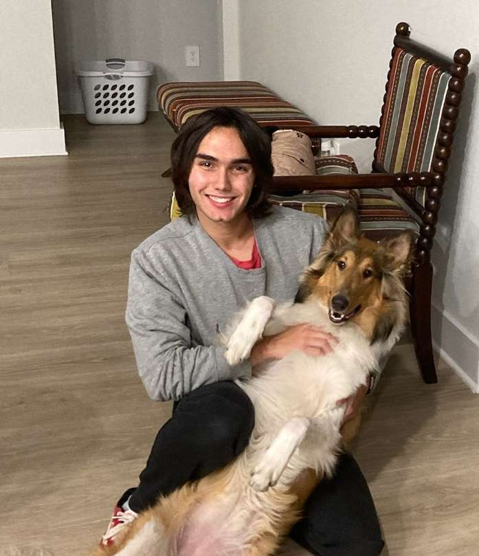

About me
Howdy! My name is Noah Bruce and I am currently studying Technology Management at Texas A&M University, I'm expecting to graduate in either December 2023 or May 2024. I was born June 20, 2002 in San Antonio but spent most of my life until college in Los Fresnos, Texas.
Little more about me
So there's a lot of things I like doing for fun. I'm a musician and my main instrument is bass guitar but I also play french horn, trumpet, guitar, ukulele, double bass, piano, and I'm learning the banjo right now. I'm a bassist for the Hullaballo band here on campus and I'm a bassist for a local rock band. Here at A&M I am a member of the Judo Club and Pre-Law Society. I really enjoy movies, tv shows, and gaming. I'm a big fan of technology and like messing around with software and hardware.
 